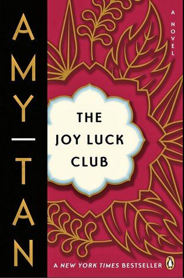
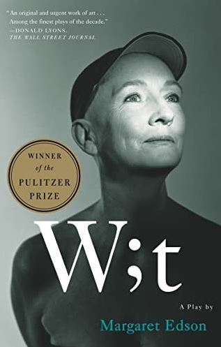

Steven Pan
Reading
Comic Strips
- Garfield (Jim Davis) and Peanuts (Charles M. Schulz), two of the greatest comic strips.
Fiction
- The Joy Luck Club by Amy Tan
- Follows 4 mother-daughter relationships, and how each of them imprint on each other. They all follow the ways Asian parents teach their kids and focus heavily on tradition and respect.

- Frankenstein by Mary Shelley
- Victor Frankenstein, an avid scientist, manages to create an 8 foot tall creature, who is never given a name. The creature is instantly rejected because of how his hideous looks. He experiences the negative
parts of humanity, including hate and anger. His pleas to be for some normalcy are never accepted which causes him to seek revenge on his creator. Throughout the story, Victor's friends and family all
die, and Victor's burning passion to kill his own creature overtakes all of his logical reasoning. In the end, Victor dies, and the creature fleas to the arctic.
- The Scarlet Letter by Nathaniel Hawthorne
- Hester Prynne has done the unthinkable in the 1640s Puritan society: she had a baby outside of her marriage. The story follows Hester, Pearl (her daughter, Arthur Dimmesdale (father of the child),
and Roger Chillingworth (husband). As punishment for Hester, she is forced to wear a scarlet A and stand on scaffold for all to see. Pearl doesn't really care if she has no friends, and finds enjoyment
playing by herself. She is also quite smart, as she is able to figure out that everyone avoids her and her mom. Dimmesdale is plagued with guilt about the incident, and ultimately dies. Even though he never loved
Hester, Chillingworth is bent on revenge and making her life miserable.
- The Adventures of Huckleberry Finn by Mark Twain
- The novel follows Huckleberry Finn, a young boy who does not like to be constrained by society. He has an abusive father, who is a severe alcoholic. To avoid his father, he teams up with Jim, a black man
and flees up the Mississippi river. Along the way, he faces many issues, espcially with Jim during the Antebellum South (slavery was still big back then). In the end, Huckleberry Finn meets up with Tom Sawyer, his best
friend, and tells him that he will flee to the west to avoid be "civilized".
- Oliver Twist by Charles Dickens
- The story follows a young boy Oliver Twist, who has to suffer through the many curveballs that life throws at him. He grew up in an orphanage, became an apprentice to an undertaker, turned into a criminal,
and uncovers his entire life story from his half brother who wants wealth.
- The Lord of the Flies by William Golding
- A group of young boys are stranded on an island after their plane crashes. They form their own community and try to survive. However, a subgroup of the boys led by the choir head decides to break off and wage war.
They become savages with a strict heiarchy and focus on killing pigs and the other boys. When the group is rescued, after burning down half of the island, they return to their original state of just boys being boys.
- The Kite Runner by Khaled Hosseini
- Amir, an afghani immigrant who now lives in California, is called back to Kabul by one of his father's friends. The story recounts the Amir's life story of how he grew up with Hassan, watched him get
raped and not do anything about it, move to California, and get married. Now that he is back, he tries to make up to Hassan by saving his son from the Taliban.
- The Hatchet (an its sequels) by Gary Paulsen
- Brian Robeson is on his way to the Canadian woods to visit his father. On the plane ride, where the pilot teaches him a few moves, the pilot experiences a heart attack. Brian becomes stranded and figures out
how to survive. The sequels are what would have happened if he was not rescued and the aftermath of the incident.
Science Fiction
- Ready Player One by Ernest Cline
- Wade Watts is a high schooler living in a trailer park. It is 2045, and the world is ruined. Everyone lives in a VR simulation fittingly called "Oasis". There are functioning jobs, school, and everything
imaginable in the real world. However, the creator of the Oasis, James Halliday left the world with a game. Whoever beats all of the stages of the game will inherit all of his riches. Wade Watts desperately
wants to win it, and along the way faces the Sixers and finds love.
- Unidentified by Douglas E. Richards
- Jason Ramsey is a hardcore believer of UFOs, also called UAVs or UAPs, but he has no evidence. To get this, he puts his body on the line and manages to connect with the Galactic Federation. They tell him
of an impending war with the Swarm, which much hesitation of course, and trust him to stop it. Jason is exposed to godly technology, and tries his best to save the woman that he loves and the world.
Fantasy
- Miss Peregine's Home for Peculiar Children (and all of its sequels) by Ransom Rigss
- Jacob Portman uncovers a secret. His grandfather has the ability to see monsters, and so can he. Mystified by such a discovery, he goes to a place that his grandfather once mentioned and finds even more special children
living in a time loop. With Jake's presence, the group asks him to stay and help fight the hollowgast (the monsters that he can see). The hollows have been planning to steal the ymbrynes, who are shape-shifting women who can
manipulate time, in order to commit atrocious acts. The sequels go on to explain how he will fight them, as he grows closer this peculiar group.
Plays
- W;t by Margaret Edson
- Vivian is a 50 year old professor who specializes in the sonnets of John Donne. She suffers from cancer and the play goes on to tell her how she reflects on her life and the people around her.

- Romeo and Julie by Shakespeare
- To be blunt: two thirteen year olds fall into forbidden love. Due to family tensions, they both commit suicide three days later.
- Hamlet
- Currently in progress (will update soon)